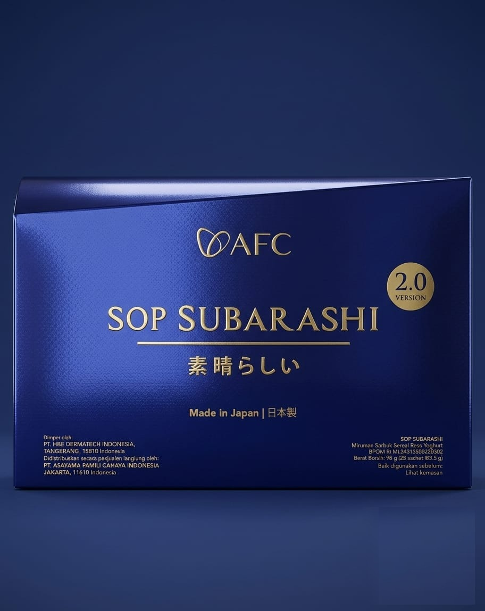

Suplemen fungsional premium dari AFC Lifescience — telah diresepkan dokter di Indonesia, terdaftar resmi di BPOM RI, bersertifikat MUI Halal, disetujui FDA USA, dan tercatat dalam buku MIMS.
Diformulasikan untuk regenerasi sel, kesehatan kardiovaskular, imunitas, dan perawatan kulit dermatologis.

Marketplace dibanjiri tiruan AFC dengan harga menggiurkan. Kandungan tidak sesuai, tanpa sertifikat, tanpa jaminan — bahkan berbahaya bagi kesehatan.
Kami adalah distributor resmi. Setiap produk melewati rantai distribusi tersertifikasi langsung dari pabrik AFC di Jepang menuju tangan Anda.
Setiap batch produk AFC melewati verifikasi keamanan & efikasi oleh lembaga kesehatan internasional sebelum sampai kepada Anda.
Ribuan pasien telah merasakan manfaat kombinasi produk AFC. Setiap kandungan aktif didukung oleh riset ilmiah & paten fungsi klinis internasional.
Banyak dokter di Indonesia meresepkan AFC kepada pasien — karena setiap kandungannya tercatat dalam buku MIMS.
Gratis konsultasi. Dijamin asli. Kirim ke seluruh Indonesia.
0852 · 3582 · 2661 WhatsApp — 08.00 s.d. 21.00 WIB